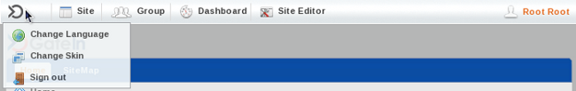

The Toolbar offers a convenient way for users and administrators to execute tasks within the portal quickly and easily.

- User Menu
You can use the main menu (located under the product icon) to change the language or skin used in the portal or to sign out.
- Site
The Site navigation function shows the different sites available in this Portal and allows users to directly edit the navigation tree.
- Group
Using the Group navigation function users can easily see and access pages in the Portal.
- Dashboard
You can use the Dashboard to create your own pages of gadgets.
The name shown in the image above is the default and can easily be overtyped when the Dashboard is open.
- Editor
Portal Administrators have access to another navigation that allows them to; add a new page to the current portal, edit a particular page's properties or to change a page's layout.
This navigation appears next to the Dashboard navigation in the Toolbar and is contextually-named. It will appear as either Site Editor, Dashboard Editor or Group Editor depending on the user's location within the portal.
Creating a new portal requires access credentials that only an administrator may set up.
Click on Site in the toolbar then click the Add New Portal button.
This opens the Create New Portal window which contains the Portal Templates tab. By default, the template used in new portals is 'Classic'.
Select the Portal Setting tab.
Enter a string for the Portal Name field. This field is required and must be unique. Only alphabetical, numerical and underscore characters are allowed for this field and the name must have at least 3 characters.
Select the default display language for the portal.
Select a skin for a portal.
Click on the Properties tab to fill in the Keep session alive property. There are 3 options:
- Never
The session will never timeout, even if an application requests it.
- On-demand
The session will timeout if an application requests it
- Always
The session will time out after a set period.
Click on the Permission Setting tab and set the permissions for the Portal.
The access permissions list for the portal is empty by default. You have to select at least one or tick on the Make it public check box to assign access permission to everyone.
Click Save
You also can edit or delete a portal. See Section 5.2.2, “Edit a Portal” or Section 5.2.6, “Delete a Portal” for more details.
An administrator can chagne many aspects of a portal:
Click Site on the Toolbar. A list of active portals will appear:
To edit the layout of a portal, click the Edit Layout key beside the active portal you wish to edit:
New applications, containers or gadgets can be dragged from the Edit Inline Composer window (inset on the right of the screen) onto the main portal body.
Elements already in place in the portal body can be rearranged or removed as required. Use the relevent button in the overlay that appears when you mouse-over each element:

The portal navigation can be edited by clicking Site in the Toolbar and selecting the Edit Navigation link next to the portal you wish to edit:
The Navigation Management window appears:

More information about actions possible in this window can be found in Section 5.3, “Manage Navigation Nodes”
Portal properties such as language, description, label, skin and permissions can be set by clicking on Site in the Toolbar and selecting the Edit Portal Properties link for the portal you wish to edit:
The various tabs available in the edit properties window give access to the properties that can be edited for the chosen portal:
Click on Save or Cancel to either set or discard any changes you have made in the portal.
To delete a portal click on the Delete icon beside the portal you no longer require.
The confirmation message will appear:
Click OK
Skins are graphic styles used to provide an attractive user interface. Each skin has its own characteristics with different backgrounds, icons, and other visual elements.
Skins can be changed temporarily (and are reset at log-out) or permanently.
- Change the skin temporarily
Mouse over the Start menu and click on Change Skin.
Select a new skin from the Skin list. By clicking on the skin name a picture will appear in the preview pane.
Click Apply to apply to the portal.
- Change the skin permanently
Click on Site, then Edit Portal's Properties.
In the Portal Setting tab, select another skin Skin list
Click Save to finish your change.
More information about adding skins to a portal can be found in the Reference Guide for this product.
If you are the portal administrator (or the administrator has granted you the appropriate permission privileges) you can execute all actions related to portal nodes. These actions include adding new nodes or editing, copying, moving, deleting or cloning existing nodes.
Click on Site then click on Edit Navigation of the portal you want to modify.
Select a node from list (to create a new node like sub-node of the selected node) or click the Up icon to create a new node at the root level of the portal.
Right-click on the selected navigation or node and select Add new Node option. The Add new node form appears:
The Page Node Setting tab includes:
- Uri
An identification of the node. The Uri is automatically created after adding a new node
- Node name
The name of the node. This field is required and must be unique. Only alpha, digit and underscore characters are allowed for this field and it must have at least 3 characters.
- Label
The display name of the node on the screen. This field is not required and may be changed. This field must have a length between 3 and 120 characters.
- Visible
This check box allow to hide (and show) the page and its node at the navigation bar, the page navigation and the site map
- Publication date & time
This option allows publishing this node for a period of time. Start Publication Date and End Publication Date only appear when this option is selected.
- Start Publication Date
The start date and time to publish the node.
- End Publication Date
The end date and time to publish the node.
In the Page Selector tab, you can select a page or not for this node.
- Page Id
The identification string of the page.
- Name
The selected page's name.
- Title
The selected page's title.
You do not have to enter values in these fields. They are automatically populated after selecting an existing page by clicking the Search and Select Page button.
The Select Page form appears:
This window lists all existing pages of Portal or Group with basic information for each page.
To select a page for creating a node, simply select a page from the list or search for a specific page as follows:
Enter your page title into the Title field to do search to Title;
Or, enter the site name into the Site Name field to do search to the page's site name;
Or, enter values into both fields to futher limit your search results by both Title and Site Name.
Select the area in which you wish to search into the Type field.
Click to perform your search. All pages matching your search criteria will be listed.
Click on the row of the page you wish to select.
After selecting a page, the details of this page will be displayed in the Page Selector form.
After configuring the page node settings, the page selector and the node's icon, click the Save button to accept or the Cancel button to quit without creating a new node.
Click Site, then click Edit Navigation of the portal you want to modify.
Right-click on the selected node and select Edit this Node option.
This will display a form to edit this node:
In the Page Node Setting tab you can change the value of these fields:
Label
Visible
Publication Date & time
After you finish making the desired changes, click the Save button to accept changes or Cancel button to exit without change.
In the Page Selector tab you can also search and select another page for this node by clicking the Search and Select Page button.
You can see more details on how to select a page for a node in Section 5.3.1, “Add a new node”.
After you finish edit any another page required for this node, click the Save button to accept changing or Cancel button to leave without saving any changes.
Click on Site then click on Edit Navigation of the portal you want to modify.
Right-click on the selected node and select Copy node option.
Select the position that you want to paste this node and select Paste Node option. Click the mark icon to Save.
The Clone node function allows you to copy a node.
The differences between clone node and copy node is that the clone node has its own page and which has the same content as the selected node.
Therefore there will be a new page that has the same name as the cloned node's page shown in the page list when you access Manage Pages.
Click on Site then click on Edit Navigation of the portal you want to modify.
Right-click on selected node and select Clone node option.
Select the position that you want to paste this node and select Paste Node option. Click the mark icon to Save.
Click on Site then click on Edit Navigation of the portal you want to modify.
Right-click on the selected node and select Cut node option.
Select the position that you want to paste this node and select Paste Node option. mark icon to Save.
Click on Site then click on Edit Navigation of the portal you want to modify.
Right-click on the selected node and select Delete node option.
It will display an alert message confirming the removal of the node. Click the OK button to accept the deletion or Cancel button to quit without deleting the node.
You can easily change the position of nodes in the navigation bar following these steps:
Click on Site then click on Edit Navigation of the portal you want to modify.
Select the node that you want to move. Right click on the selected node and then click on Move up or Move down
The selected node will be moved up or down within the list.
A page creation wizard is available to administrators in order to create and publish portal pages quickly and easily.
Mouse over Site Editor then select Add New Page.
The wizard window is divided into two sections: the left pane contains the existing page/node hierarchy and the right pane displays the Page Editor.
In the left pane, you can navigate up and down the node/page structure:
In the right pane are the required paramters for a new page:
- Current Selected Page Node
The path of the selected node to add a new sub page
- Node Name
The node name of the added page. It is required field. This field must start with a character and must have a length between 3 and 30 characters.
- Display Name
The display name of the node which contains the added page and must have a length between 3 and 30 characters.
- Visible
This checkbox toggles the global visibility of this page.
If checked the page or the page node appears on on the navigation bar, the page navigation and the site map. If "visible" is checked the visibility depends on the "publication date & time" attribute.
If unchecked the page is not shown under any circumstances, even if the publication period valid.
- Publication date &time
This option allows publishing the page for a period of time. If this option is checked the visibility of the page depends on the publication period start and end date.
- Start Publication Date
The start date and time to publish the page
- End Publication Date
The end date and time to publish the page.
Setting Time and Date
You can set date and time by clicking the Start Publication Date field and End Publication Date field and select a date in the calendar pop up
Click Next or number '2' of the wizard steps to go to step 2.
Select Empty Layout or click the icon to see more templates to select.
Click the Next button or number '3' of the wizard step to go to step 3. You can drag portlets from the popup panel into the main pane to create the content of this page.
- Applications
Allows listing all existing portlets
- Containers
Allows listing all existing containers
- Switch View mode
Allows viewing a page in preview mode
Click the Show Container icon if you want to see the existing containers and re-select the layout of the page. You can click on the Switch icon to view the content of this page.
Click Save to accept creating a new page, Back button to return the previous step or Abort button to quit without creating a new page.
Mouse over Group in the Toolbar, highlight Administration then select Page Management.
Click on Add New Page.
- Page Id
A string that identifies the page. It is automatically generated when you finish creating the page.
- Owner type
If the page Owner type is portal the page is created for a portal. Therefore only users who have edit permissions on the portal level can create this page type.
The name of the current portal is automatically selected for Owner id ensuring the edit permissions are assigned to users who can edit the current portal.
If the page Owner type is group the page is created for a group. Therefore only users who have manager permissions for that group can create this page type.
- Owner Id
The name of the page owner. When the owner type is set to group, a list of groups will allow you to select one user as the 'owner'.
- Page Name
The name of the page. This is a required field and must be unique. Only alphabetical, numerical and underscore characters are allowed to be used for this field and the name must be at least 3 and no more than 30 characters in length.
- Page title
The title of the the page. This is an optional field. If you choose to add a title to the page it must be at least 3 and no more than 30 characters in length.
- Show Max Window
The option allows users to choose whether the page is shown at maximum size or not.
Enter values for fields in the Permission Setting tab
- Access Permission
The content of this tab is identical to the Owner type field in the Page Setting tab. Therefore, all users having access rights for the type selected in the Owner type field will appear in this tab. But users can also change the value of this tab.
Check the check box if you want to share access with everyone or click the Add Permission button to assign permission on group level, then select a group and membership or click the trash can icon to remove a group from the list.
- Edit Permission
The content of this tab depends on the value of the Owner type field in the Page Setting tab.
If the Owner type is "group", edit permission is assigned to users who are "manager" of the group that is selected in Owner id. You can only change this value when editing the page.
Click Save.
Mouse over Group in the Toolbar. Highlight Administration and then click on Page Management.
Click the edit icon on the row of page you want to edit in the existing page list.
Click the edit icon to show a form to edit page properties.
The properties presented in the Page Properties window are the same as those outlined in Section 5.4.1.2, “Adding a new Page using Page Management”.
- Permission Setting
This form is supported for pages with group or portal ownership types. Because a user page is private, no user, other than the creator, can access or edit it.
Permission on each page is set in two levels: Access right and Edit right.
- Access right
The page Access right can be set to specific user groups or set to everyone (this includes unregistered users).
Current access permissions on page are listed and you can remove permissions (by clicking the delete icon) or add further permission (by click the Add Permission button).
Populating the Make it public check box will allow all users (registered or unregistered) to access the page.
- Edit right
The Edit right allows users to change information on a page. Edit right only is set for a group of users.
Edit right can be set for one specific membership type within a particular group (* allows every membership type in a group). If you want to re-assign this right to another group, click Select Permission to choose another one.
- Editing page container layout
Click the Show Container icon to show current container layout of selected page on your right and all the container layouts list on the left pane.
If you want to change the current layout, select a layout type from the list on the left pane, then drag the template you want into the right pane. The new container will be displayed on the right pane.
You can change the position of the current container by dragging it to another place on the right pane or remove it completely by clicking the delete icon in the right corner.
- Editing page portlet layout
Click the Show Portlet icon to show current portlet layout of page.
If you want to change the current layout, select a layout type from the list on the left pane, then drag it into the right pane. The new portlet will be added and displayed in the right pane. You can change the position of the current portlet by dragging it to the place you want on the right pane, or remove it completely by clicking the delete icon.
View any page in the existing pages list by clicking on the View icon corresponding to the page you want to view.
Go to Group in the Toolbar. Highlight Administration and then click on Page Management. You will be presented with a list of all existing pages.
Click the trash can icon in the row of the page you want to delete. It will display the confirmation message.
Click the OK button to complete the deletion or Cancel button to quit without deleting the page.
To assist administrators to modify or personalize their portal GateIn 3.0 allows you to easily drag and drop page content within the page.
Go to Site Editor in the toolbar and click on Edit Layout It will display :
Click on the Portal Page, drag and drop within the portal page.
Several tools are offered to assist Administrators manage users, groups and memberships easily and effectively.
Mouse over Group on the Toolbar. Highlight Organization and select Users and Groups Management
Administrators can see all existing registered users and search, edit or even delete them. Each user's groups and memberships (roles) in these groups are also available. You can not add users to a group but you can remove them from the group.
To add a new user to the portal user lists follow these steps:
Mouse-over Group in the Toolbar.
Highlight Organization and then click on New Staff.
The New Staff window will open:
This window has two tabs; Account Settings and User Profile.
To create a new user all of the fields in the Account Settings tab must be completed.
Further information about the user (such as nickname and birthday) can be added in the User Profile tab. This information is not required for the creation of the account.
Click either Save or Reset to create or discard the new account.
The Administrator can search for specific users by username, first name, last name or email address.
Select the information type (name, email, etc) to search against
Type in a partial/full string which identifies the user record being searched. Note that wild cards are not supported at this release.
Click the magnifying glass icon to begin the search.
Locate the user you wish to edit.
Click the edit icon (next to the trash icon).
Select the Account Info tab to edit the main user information set including first name, last name or email address.
- User Name
The User Name field cannot be changed. Other fields First Name , Last Name , Email Address can be changed.
- Change Password
The Change Password option allows an administrator to set a new password for a user. When the Change Password option is unchecked, New Password and Confirm Password are hidden. Passwords must contain at least 6 characters and can contain letters, numbers and punctuation marks.
Select the User Profile tab to edit additional information about the user's profile such as the birthdate or the job title as well as some home and business metadata. You may also switch the default display language for that user.
Select the User Membership tab to see a user's group membership information.
- User Membership
The User Membership tab displays which group(s) the selected user belongs to. In the above figure, the user "demo" is a member of two groups: "guests" and "users". The parent group of both is "platform".
To remove the user from a group, click the trash can icon.
Click the Save.
Mouse over Group on the Toolbar. Highlight Organization and select Users and Groups Management
Select the tab Group Management
By default, all existing groups will be displayed on the left pane. This tab is used to add new, edit or delete a group. The right pane shows information about the selected group including information about the members in the specific group along with a small form to add a new user to a group.
First choose where in the existing group structure you want the new group to be created. You may navigate up the tree by clicking on the green vertical little arrow at the top of the tree. The current path is displayed in the path bar.
Click Add New Group.
- Group Name
The name of the new group. This field is required and any length from 3 to 30 characters is allowed. Once saved this name cannot be edited.
- Label
The display name of the group. Any length from 3 to 30 characters is allowed.
- Description
A description of the group. Any length from 3 to 30 characters is allowed.
Fill in the required fields. Only letters, numbers and underscore characters are allowed for the Group Name field. The name must be unique within the portal.
Click Save
Find the group in the existing tree and click on the label
Click the edit icon to display the Edit Current Group window.
Make the desired changes in the appropriate fields. You can not change the Group Name, however you may change to the Label field. You are also able to edit the Description field.
Click Save
Find the group in the existing tree and click on its label. Existing group memberships are listed on the left hand side along with the Add Member window.
Click on the magnify glass to open up the User selector.
Refer to Section 5.5.1.2, “Search for users” for instructions on how to locate a user.
Check the box next to the user name then click Add
Select the membership appropriate for this user. If the desired membership does not appear you may try to click on the refresh icon to get the latest list.
Click Save
Click the edit icon in the Action column
Select another membership.
Click Save.

The role of a user in a specific group is managed using memberships.
By default three membership types are available: Manager, Member and Validator. By definition, Manager has got the highest rights in a group.
Mouse over Group on the Toolbar. Highlight Organization and select Users and Groups Management. Select the Membership Management tab.
In the Add/Edit Membership form, enter the values for the membership name field (required) and the description field (optional). Only letters, digits, dots, dashes and underscores are allowed for the membership name.
Click the Save
Click the edit icon in the Action column.
Make the desired changes to the description.
Click Save
Permissions play an important part in accessing and performing actions in the Portal. Depending on these permissions assigned by an administrator, users gain access to various components and actions such as edit portals, pages or portlets.
Details about permission types and levels can be found in Section 2.7, “Permissions”
- New portals
Click on Site in the Toolbar then click on Add New Portal. Last select the Permission Setting tab.
- Existing portals
On the Toolbar click Site then Edit Portal's Properties. Last select the Permission Setting tab.
Public access
If you do not want your Portal to be publicly accessible, make sure the Make it public check box is clear.
If Make it public is clear, you need to add permissions by member group.
Click Add Permission
Make the appropriate selections from the group and membership options presented in the Permission Selector dialogue box.
After selecting a membership type, the selected permission is displayed in the access permission list. You can only select one group with one membership type at a time. If you want to add more, click Add Permission and select again. Repeat the process for as many permission settings as you require. >
Only users members of the Editor group can edit that portal. Access rights can be given to several groups but edit rights can only be given to a group with a membership type. To assign an edit permission to a user, you must add him/her to the editor group of the respective portal.
Click Edit Permission Setting
Click Select Permission to choose a group.
Select a group and a membership type from the left and right panes, respectively, of the Permission Selector window (select * if you want to assign all available membership types to the selected group).
- User
If the owner type of a page is "user", you don't have to set permissions, no one except the creator has got access and edit permissions.
- Group
If the Owner type of a page is "group", initial permissions on page are:
Access permission: everyone in that group.
Edit permission: the manager of that group.
- Portal
If the Owner type of a page is portal, initial permissions are:
Access permission: users who can access that portal.
Edit permission: users who can edit that portal.
Open up the page you wish to configure. Select Site Editor on the Toolbar and select Edit Page.
Click View Page Properties in the Page Editor applet.
Click the Permission Setting tab.
To be able to access a page users have to be in one of the groups that have access permission to that page. There may be several groups that have access rights to a page. A list of the permissions for that page will be shown (provided the Make it public check-box has not been used).
Click Add Permission
Select a group in the left pane then select a membership type.
After selecting a membership type, the selected permission is displayed in the access right list. Note that you may associate group and membership only one at a time. To add more access permissions, click the Add Permission button and apply the same process again.
If you want to allow any visitors to access the page tick the Make it public check-box. Any permission set for that page will be relaxed and the permissions list will disappear.
Only users who are in the page's editor group can edit it. The access right can be set for several groups but the edit right only can be set for one group. To give a user the edit permission, you must add them to the editors group of that page.
The Permission Setting tab is available in two different ways:
Via Edit Page:
Mouse over Site Editor on the Toolbar and select Edit Page.
Click on View Page Properties in the Page Editor applet.
Click the Permission Setting tab then the Edit Permission Setting sub tab.
Via Page Management:
Mouse over Group on the Toolbar, highlight Administration and click on Page Management.
Locate the page you want to edit using the Page Id column then click the edit icon (next to the trash icon). You will be taken to the Page Editor applet.
Click on the Permission Setting tab then the Edit Permission Setting sub tab.
You will see the Current Permission listed.
Click the Select Permission button to set new or change another group.
Select a group with a membership type (select * if you want all membership types in a selected group)
After selecting a specific membership from the right, the selected information is displayed.
Click the Save
Setting access permission on a category allows to be able to list those categories when editing a page in order to add portlets or widgets.
Mouse over Group on the Toolbar, highlight Administration then click on Application Registry.
In the list of categories available in the left pane, click the edit icon, then choose the Permission Setting tab.
To set permissions for a category:
Click the Add Permission button to add access permissions to more groups .
Or select the Make it public check box to allow everyone to access.
Select Group on the Toolbar. Highlight the Administration entry and click on Application Registry.
Select a category on the left pane that includes the portlet you want to set rights for. Then all portlets of the selected category are listed immediately and detail information of each portlet is displayed on the right pane.
To set permissions for a portlet:
Click the Add Permission button to add access permissions to more groups .
Or select the Make it public check box to allow everyone to access.